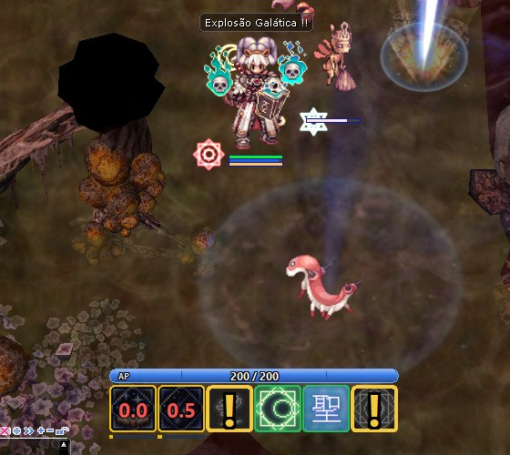
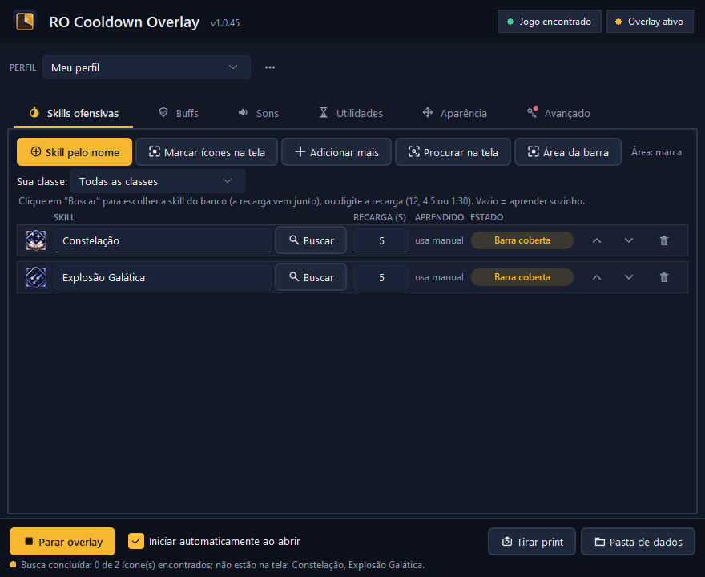
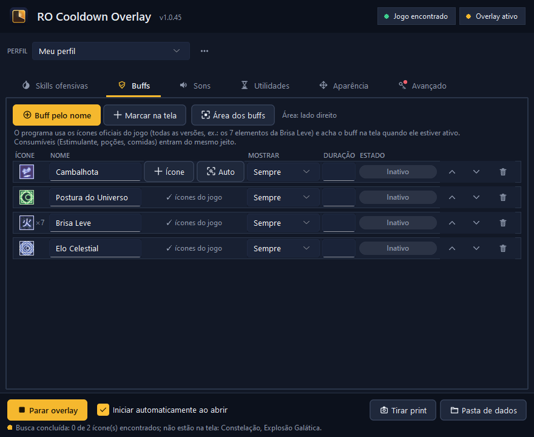
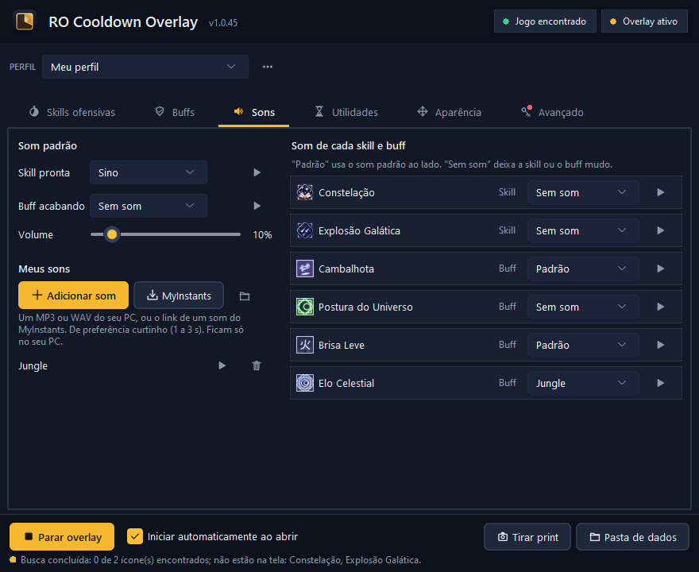
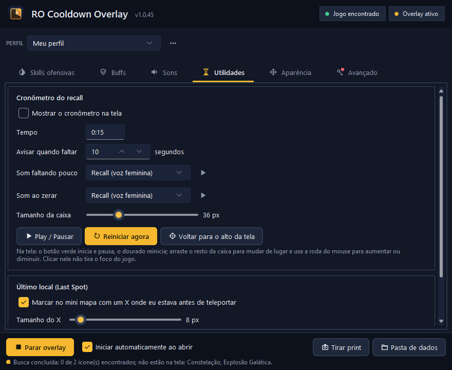
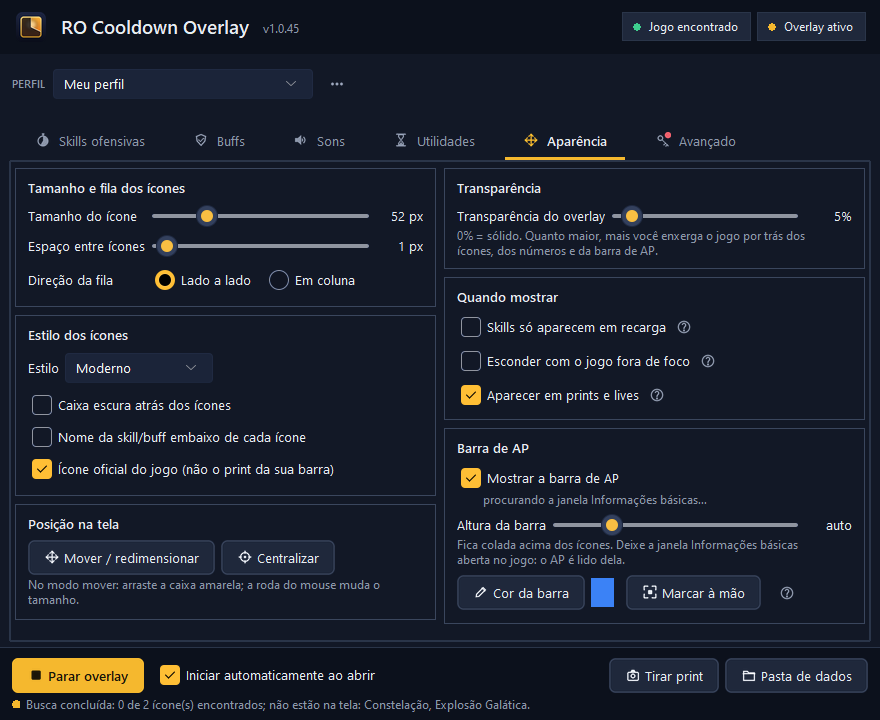
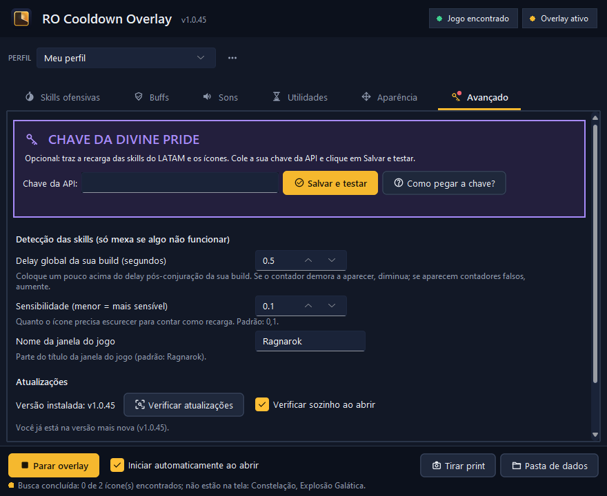

Print de verdade, tirado durante o jogo. O overlay fica onde você quiser e o clique passa direto por ele.

1234
1
Barra de AP
Seu AP em cima dos ícones, sem precisar olhar a janela do jogo.
2
Skill em recarga
O ícone escurece e o número conta os segundos que faltam. Fica vermelho nos últimos 3 segundos.
3
Buff ativo
Borda verde: o buff está em você.
4
Buff faltando
O "!" piscando avisa que o buff acabou. Hora de usar de novo.
Passo a passo
São oito passos. Nas imagens, cada número dourado mostra o lugar do botão e a caixa ao lado explica o que ele faz.
1
Baixar e abrir
Clique em Baixar para Windows.
Clique com o botão direito no arquivo .zip e escolha "Extrair tudo…". Extraia para a Área de Trabalho ou para Documentos. Não use a pasta Arquivos de Programas.
Abra a pasta "RO Cooldown Overlay" e dê dois cliques em "RO Cooldown Overlay.exe".
Não precisa instalar Python. Tudo já vem dentro da pasta.
Se aparecer "O Windows protegeu o computador", clique em "Mais informações" e depois em "Executar assim mesmo". Isso só acontece na primeira vez.
O programa se atualiza sozinho.
2
Abra o Ragnarok em modo janela
Use modo janela ou janela sem bordas. Em tela cheia exclusiva nenhum overlay aparece.
3
Aba "Skills ofensivas"
Aqui você diz quais skills o programa deve vigiar.

12345
1
Skill pelo nome
O jeito mais fácil. Escolha a skill pelo nome e o programa baixa o ícone e acha ela sozinho na sua barra de atalhos.
2
Marcar ícones na tela
A tela congela. Com as skills prontas, arraste um quadrado sobre cada skill da barra de atalhos e aperte Enter.
3
Buscar
Em cada linha, escolha o nome da skill. A recarga já vem preenchida.
4
Recarga (s)
Pode digitar 12, 4.5 ou 1:30. Se deixar vazio, o programa aprende sozinho.
5
Iniciar overlay
O botão dourado de baixo. No print ele diz "Parar overlay" porque já estava ligado.
4
Aba "Buffs"
Aqui você escolhe quais buffs aparecem.

123
1
Buff pelo nome
O programa usa os ícones oficiais do jogo e acha o buff na tela quando ele estiver ativo. Poções e comidas entram do mesmo jeito.
2
Área dos buffs
Marque a região da tela onde ficam os ícones de buff do jogo.
3
Mostrar
Escolha quando o buff aparece: Sempre, Só quando faltar ou Só quando ativo.
5
Aba "Sons"
Aqui você escolhe o som de cada aviso.

123
1
Som padrão
O som de quando a skill volta e de quando o buff está acabando. O botão de play testa o som. Embaixo fica o volume.
2
Meus sons
Ponha um MP3 ou WAV do seu PC, ou o link de um som do MyInstants. De preferência curtinho, de 1 a 3 segundos.
3
Som de cada skill e buff
Cada um pode ter o seu som. "Padrão" usa o som padrão. "Sem som" deixa mudo.
6
Aba "Utilidades"
Dois extras: um cronômetro na tela e o X do último local. Os dois funcionam mesmo com o overlay parado.

12345
1
Cronômetro na tela
Uma contagem regressiva por cima do jogo. Use para o Recall da PT, para alimentar o PET, para cronometrar farms e o que mais precisar.
2
Tempo
Quanto contar a cada reinício. Ex.: 300, 3:00 ou 4:30.
3
Aviso e sons
Faltando pouco, os números piscam e toca um som. Outro som toca ao zerar.
4
Play e Reiniciar
Os mesmos botões ficam no cronômetro da tela: o verde inicia e pausa, o dourado reinicia.
5
Último local
Marca um X no mini mapa onde você estava antes de teleportar. Verde: mesmo mapa. Vermelho: outro mapa.
7
Aba "Aparência"
Aqui você deixa o overlay do seu jeito.

1234
1
Tamanho e espaço
Mude o tamanho dos ícones e o espaço entre eles.
2
Mover / redimensionar
O overlay vira uma caixa amarela. Arraste para mudar de lugar e use a roda do mouse para mudar o tamanho.
3
Transparência do overlay
0% é sólido. Quanto maior o número, mais você vê o jogo por trás.
4
Barra de AP
Mostra o AP acima dos ícones. Deixe a janela Informações básicas aberta no jogo.
8
Aba "Avançado"
Ajustes que quase ninguém precisa mexer. Role a aba para ver o resto.

1234
1
Chave da Divine Pride
Opcional. Traz a recarga das skills do LATAM e os ícones. Cole a sua chave e clique em "Salvar e testar". O botão ao lado ensina a pegar a chave.
2
Detecção das skills
Só mexa se algo não funcionar. A dica de cada campo diz quando aumentar ou diminuir.
3
Nome da janela
Parte do título da janela do jogo. O padrão é Ragnarok.
4
Atualizações
O programa procura versão nova sozinho ao abrir. Baixa e instala sem apagar seus perfis.
É seguro?
Só olha a tela, como um print ou o OBS.
Não lê a memória do jogo.
Não mexe nos arquivos do jogo.
Não aperta teclas por você.
Aviso: é um programa de terceiros. Use por sua conta e risco. Não tem ligação com a Gravity.
O antivírus pode reclamar por engano. O .exe é gerado pelo próprio GitHub a partir do código aberto, que qualquer pessoa pode conferir.